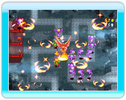

13 |
Invocación |
 |
En cada Oleada tienes la oportunidad de invocar un poderoso esper de la tierra de las ilusiones. Sin embargo, para poder invocar a estas poderosas bestias, antes debes completar los mapas en las que aparecen.
Los espers ayudan al grupo dañando a los monstruos o beneficiando a las unidades, pero tienen su coste. La invocación precisa de un desembolso de cristales de tus arcas, y no podrás invocar a un esper si no tienes la cantidad necesaria.
|
 |
 |
 |